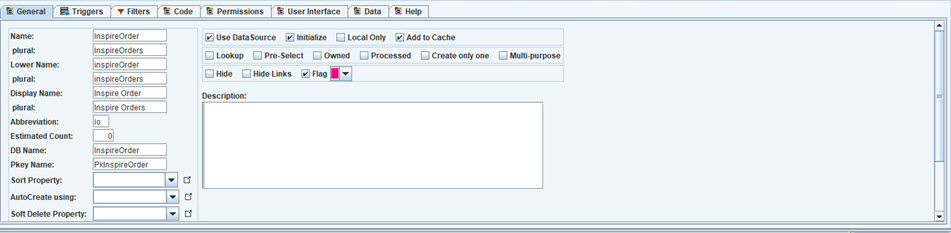
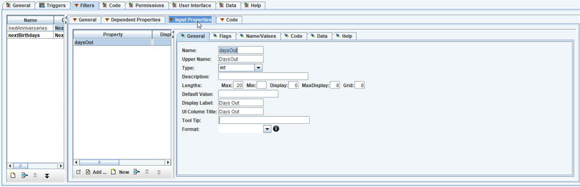
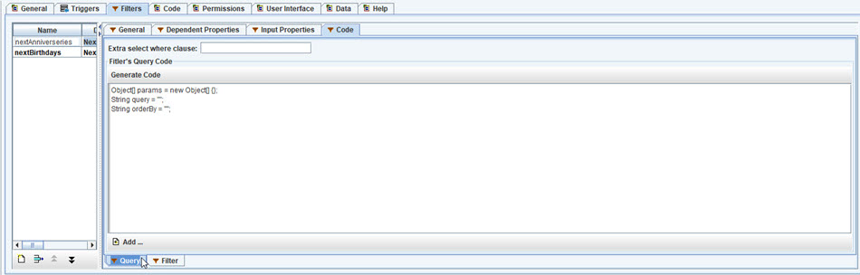
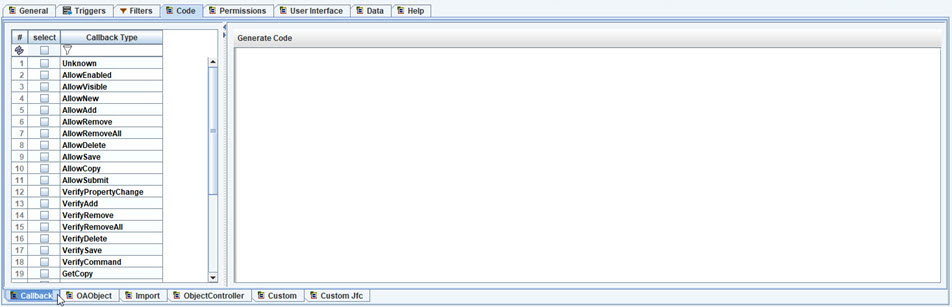
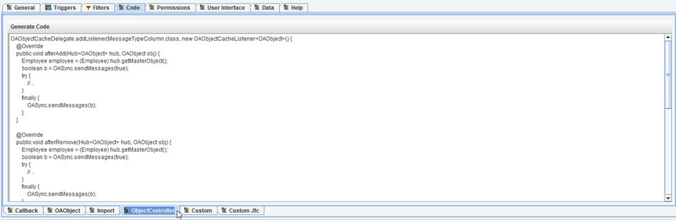
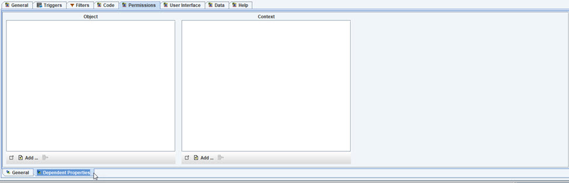

Object Editor

The object editor is used to define the information about each object in the model.
As with all of the Editors, as much of the data is filled out as possible.
General Information tab
- Name of class - upper camel case.
- plural - upper camel case.
- Lower Name - lower camel case.
- Display Name - using spaces.
- Abbreviation
- Estimated Count - defautls to 0 for undefined.
- DB name - name of table in database.
- Pkey name - name of primary key.
- Sort property - default sort property (if any).
- AutoCreate using - can use a property that has name/value pairs to autocreate the objects at for this class.
- Soft delete property - a date[time] property that can be used to mark the object as deleted.
- Reason property - a string property that allows a user to give the reason for a soft delete.
- Version Property - a date[time] property that can be used to create version of an object, to track changes. Objects that have a null value are the current version.
- Version Link - a link to another object that maintains versions of objects in this class.
- Time Series Property -
a datetime property that can be used capturing time series data.
- Use DataSource - if true/checked, then this class is saved (persisted), else it will not be.
- Initialize - if true, then this class should be initialized when created.
- Local Only - flag to know if this object should be local only (true) or allowed to distributed.
- Add to Cache - flag to know if objects should be cached.
- Lookup - flag to know if this object is used for dropdown/pickfrom lists.
- Pre-select - flag to know if this object is preselected at startup and kept in cache.
- Owned - flag to know that this object will be owned by another object. (see Link)
- Processed - flag to know if these objects will be created by a process and not by user.
- Create only one - flag to know if there is only one instance, (singleton) that is autocreated.
- Multi-purpose - flag to know if this object is used (linked) by other objects and does not need a reverse link. Example: an Object PhoneType
- Hide - dont show this object in model, unless show all is select, it is selected, or a link object is selected.
- Hide Links - dont show links to this object, unless model has show all links, or this object is selected. Example: an Object for Image that is used by a lot of object Objects.
- Flag - allows this object to display a different title color, else gray.
Triggers tab
Create a new Obect Trigger, which is code that will run when a specific change/event happens.
- Trigger Name
- Upper Name
- Display Name
- Description
- Loaded Data Only - if the trigger only is for active (loaded in cache) objects only.
- Run on server - if trigger code should run on server.
- Use background thread - if code can run in another thread.
Dependent property paths for Trigger.
- Use add button to included a property path to listen to for the Trigger.
Trigger Code to run.
- Generate Code - generate template code based on selected dependent properties.
Filters are used to determine if an Object meets specific criteria, and is used
to create a sub list.
- Filter Name
- Upper Name
- Display Name
- Description
- For Tables - if UI tables should include this Filter.
- Refresh Daily - if Filter should be refreshed daily, used for date specific Filters.
- Add to Root - if this Filter should be included in application root object and kept updated realtime.
Dependent Properties are the property paths that are used by the Filter.
- Use add button to select a property path to add to this list of dependent properties.

Input Properties that are needed for the Filter.
This is similar to creating a new Object Property, that will
be used for the input class that is created for the Filter.
- Add an existing Property
- Create a new property

Code used for the query and for the actual Filter Java code.
- Extra select6 where clause - is to add additional where clause.
- Filters Query Code - Java code used to run the query.
- Add - included property paths needed by Filter.
- Filter tab - Java code that determines if filter is true or false.

Java Object code tab is list of various Java code blocks to include.
See callbacks for more information.
The Callback tab is used for the Object Callback method, used for accessing specific information,
and allows for custom handling of a list of common callbacks.
- Select from callback types - select the callbacks that have custom code.
- Generate code - will generate template code for then adding custom code.
Add custom code to overwrite OAObject base methods.
- afterLoad - after object is loaded from datasource.
- canSave - returns true (default) if object can be saved.
- save - called to save the object. Default is to have the datasource save this object and mark the object
isChanged = false and isNew = false.
- afterSave - called after object is saved.
- canDelete - called to determine if object can be deleted, default is true.
- delete - call to delete object. Default is to have datasource delete the object, and
flag object.isDeleted = true and object.isNew = true.
- afterDelete is called afer object is deleted.
Add additonal custom imports that are needed for this Object.

Add Object Controller custom code for this Object.
This is used to have custom code ran when specific things change to this Object.
Custom code to add to Object class.
Custom JFC code to add to the JFC generated class for this Object.
Permission for Visibility and Enabled.
- Visibility - is read access allowed.
- Enabled - if write access allowed.
- Visibility Property - property path from this Object.
- Enabled Property - property path from this Object.
- Context Visibility Property - property path from User/Context object.
- Context Enabled Property - property path from User/Context Object.

- Dependent Properties - used to define additional property paths used to determin isVisible or isEnabled.
The User Interface tab is used to further define the UI for an Object.
The UI General sub tab:
- Display property - default property path to use for displaying Object.
- Warning property - property path that can be used to get a warning message about Object.
- Status Bar property - property path used to display on status bar for UI application.
- Default UI Container - to select the UI Container to use for UI.
- SplitPane Container - UI container to use for UI that uses splitpane panel.
- Wizard UI Container - UI container to use whe creating a new Object.
- Icon Property - property path to use to get the display icon.
- Foreground Color Property - property path to use to get the fonts color.
- Background Color Property - property path to use to get the background color to use.
- Icon Color Property - property path to use to get the color to use for an icon.
- Font Property - property path to use to get the font to use.
- Lookup uses table combo - if object is lookup, flag to use a table combo instead of propery combo.
- Lookup uses goto button - if object is lookup, flag to know if a goto button should be added to lookup combo.
UI Container is used to customize the layout for the UI panels.
- New button - add a new layout panel, and pick layout information.
- Add button - add a property path to a panel.
- Generate - will create a container.
- Popup - used to show in a popup window.
Edit Panel shows the layout and information for creating the default layout.
A UI Container can used to create a custom layout.
- Include - true if this property should be include in the UI.
- Tree node - for references, flag to add child node to UI tree.
- Report - flag to determine if the property should be added to default report.
- Title - to use for default UI label.
Table Column tab.
Columns to create for UI Table using property paths. This allows customizations to the editor and renderers.
- Property path - for column.
- Column Name
- Cols - width of column
- View Only
- Show Sum - to have last row of table show totals.
- Format - for display
- ToolTip - mouse over template.
- UI Code - custom code for editor and rendering.
Table Config tab.
Allows users to customize table and columns.
Search Panel tab for defining search property paths.
- Add property paths for search UI.
- Input Type - allows one or range.
- Null and NotNull Options - to allow searching based on null value.
Search Filters tab for adding custom code to filter datasource results, that cant be directly done using
query string to datasource (SQL).
Search Filters tab for adding custom code to filter objects.
Templates tab, for building custom output for various UI display.
- Display Template - used for labels, columns, etc.
- Object Template - used to display the full object.
Tooltip Template.
- ToolTip Template - used for mouse over display.
AutoComplete tab, used for defining how auto complete works with this Object.
- Match Template - used for building text string for matching user input.
- Lengths - used for UI sizing and popups.
- Display Template - for drop down display.
- Help ToolTip - template used for autocomplete mouse over.
Calendar tab, used to define any date properties that can be used by
a calendar UI component to search and display.
- Calendar Name
- Display Name
- Descripton
- Type - type of calendar, day or time frame.
- Begin & End date & time - date & time properties used for this Object's Calendar.
The end values are used to span.
- Display Hub - which reference/link to display for date.
- Filter - filter to use for displaying list.
- IsActive property - used to determine if the calendar entry (object) is active.
Sort By tab. List of properties to use for selecting the sort order of search results.
- Name
- Upper Name
- Display Name
- Property Path
- Add button - to add another property path for searching by.
Group by tab. To allow grouping search results by another object.
Root Tree tab. Allows for picking the property path from a root object to this Object.
- Add - shows root Objects that can be expanded to get to the selected Object.
Reports tab. Used for building reports based on Templates.
- Defaults - will create a default Detail & List reports.